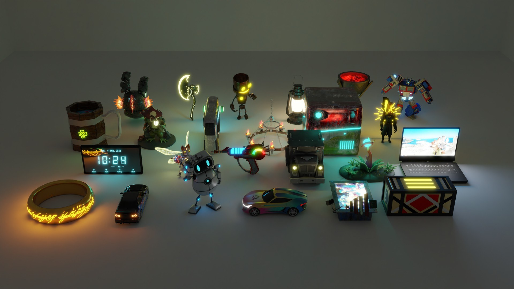
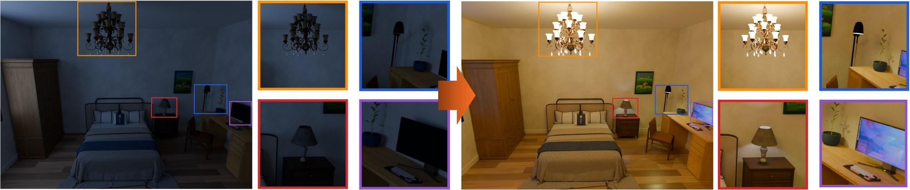
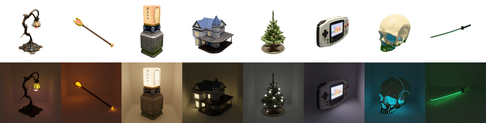
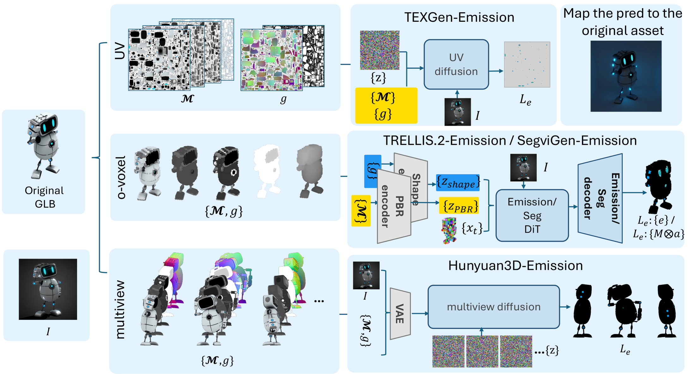
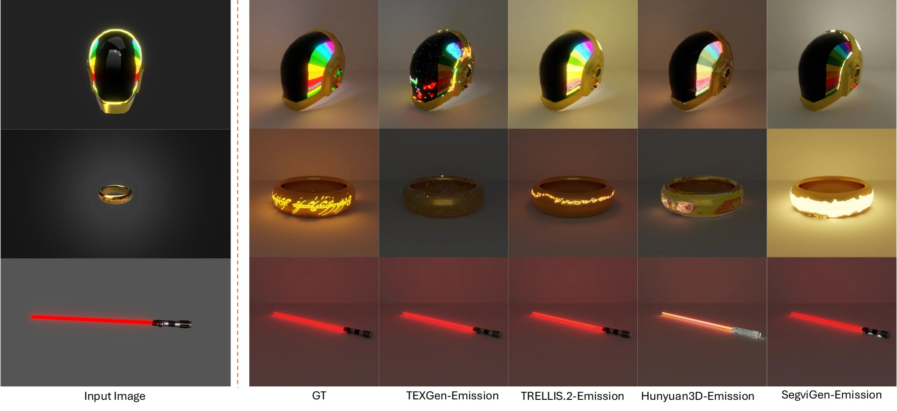

LightGenBench
A Benchmark for 3D Emission Generation

Video. The task, the data and the baselines in two and a half minutes.
Emission generation. Previous 3D generation works create assets that reflect light but cannot emit it. Our work generates the emission for an object, so it can light up the scene.

36,826 emissive assets. Artist-made shapes in 106 categories, curated from TexVerse, each with albedo, metallic, roughness, opacity and emission.

Four baselines. We adapt UV, sparse-voxel, multi-view and segmentation-based generators to emission, and score where each one makes an asset glow and how.

Far from solved. In the paper, the best baseline, TRELLIS.2-Emission, reaches an IoU of only 0.263 against the artist-made emission.

Download. LightGenBench is openly available on Hugging Face, split into 36,426 train, 200 validation and 200 test shapes.
hf download 3dlg-hcvc/LightgenBench --repo-type dataset --local-dir lightgenbench